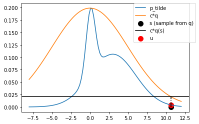
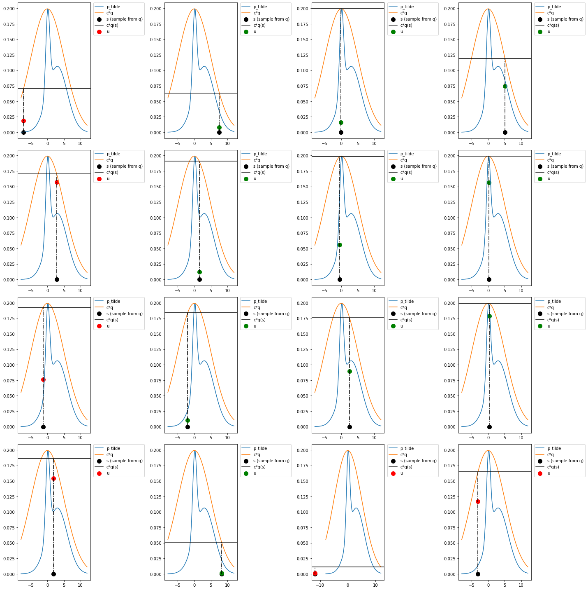

Simple rejection sampling
Contents
import torch
dist = torch.distributions
import matplotlib.pyplot as plt
import pandas as pd
%matplotlib inline
Simple rejection sampling#
mix = dist.MixtureSameFamily(
mixture_distribution=dist.Categorical(torch.tensor([0.2, 0.8])),
component_distribution=dist.Normal(torch.tensor([0.1, 3]), torch.tensor([0.6, 3])),
)
x = torch.linspace(-4., 4, 5)
theta_range = torch.linspace(-8, 12, 100)
plt.plot(theta_range, mix.log_prob(theta_range).exp())
[<matplotlib.lines.Line2D at 0x14871f760>]
mix.mean, mix.stddev
(tensor(2.4200), tensor(2.9356))
q = dist.Normal(loc = 0., scale=1.)
plt.plot(theta_range, q.log_prob(theta_range).exp())
[<matplotlib.lines.Line2D at 0x148788e20>]
plt.plot(theta_range, mix.log_prob(theta_range).exp(), label='p_tilde')
plt.plot(theta_range, q.log_prob(theta_range).exp(), label='q')
plt.legend()
<matplotlib.legend.Legend at 0x1487f25e0>
Choosing proposal q with high variance
q = dist.Normal(loc = 0., scale=5.)
plt.plot(theta_range, mix.log_prob(theta_range).exp(), label='p_tilde')
plt.plot(theta_range, q.log_prob(theta_range).exp(), label='q')
plt.legend()
<matplotlib.legend.Legend at 0x147ce8a00>
Scaling q so that cq(x) >= p(x) for all x
theta_more = theta_range[mix.log_prob(theta_range).exp() > q.log_prob(theta_range).exp()]
c = (mix.log_prob(theta_more).exp()/q.log_prob(theta_more).exp()).max().item()
q = dist.Normal(loc = 0., scale=5.)
plt.plot(theta_range, mix.log_prob(theta_range).exp(), label='p_tilde')
plt.plot(theta_range, c*q.log_prob(theta_range).exp(), label='c*q')
plt.legend()
<matplotlib.legend.Legend at 0x148b6d610>
plt.gca().get_xlim()
(0.0, 1.0)
def plot_rejection(ax=None):
if ax is None:
fig, ax = plt.subplots()
s = q.sample()
ax.plot(theta_range, mix.log_prob(theta_range).exp(), label='p_tilde')
ax.plot(theta_range, c*q.log_prob(theta_range).exp(), label='c*q')
ax.scatter([s], 0, label='s (sample from q)', s=100,color='k')
cqs = c*q.log_prob(s).exp().item()
ax.axhline(cqs, label='c*q(s)', color='k')
ax.plot([s, s], [0, cqs], color='k', linestyle='-.')
u = dist.Uniform(0, cqs).sample()
if u > mix.log_prob(s).exp():
ax.scatter([s], [u], label='u', s=100,color='r')
else:
ax.scatter([s], [u], label='u', s=100,color='g')
ax.legend(bbox_to_anchor=(1.04,1), borderaxespad=0)
plot_rejection()

fig, ax = plt.subplots(nrows=4, ncols=4, figsize=(20, 20))
for i in range(16):
plot_rejection(ax[i//4, i%4])
fig.tight_layout()

N = 5000
s = q.sample([N])
fig, ax = plt.subplots()
ax.plot(theta_range, mix.log_prob(theta_range).exp(), label='p_tilde')
ax.plot(theta_range, c*q.log_prob(theta_range).exp(), label='c*q')
ax.scatter(s, torch.zeros_like(s), label='s (sample from q)', s=5,color='k', marker='|')
cqs = c*q.log_prob(s).exp()
u = dist.Uniform(0, cqs).sample()
gt_index = u > mix.log_prob(s).exp()
gt = u[gt_index]
s_gt = s[gt_index]
s_lt = s[~gt_index]
lt = u[~gt_index]
ax.scatter(s_gt, gt, s=1,color='r', label='Rejected')
ax.scatter(s_lt, lt, label='Accepted', s=1,color='g')
ax.legend()
<matplotlib.legend.Legend at 0x14c6efb20>
sns.kdeplot(s_lt)
sns.kdeplot(mix.sample([1000]))
<AxesSubplot:ylabel='Density'>
Linear Regression#
y = 4*x + torch.randn(5)
plt.scatter(x, y)
<matplotlib.collections.PathCollection at 0x146cd6f40>
prior = dist.Normal(loc = 0., scale = 1.)
likelihood = lambda t: dist.Normal(loc = x*t, scale=1.).log_prob(y).sum(axis=0).exp().item()
log_likelihood = lambda t: dist.Normal(loc = x*t, scale=1.).log_prob(y).sum(axis=0)
lls = {}
ls = {}
theta_range = torch.linspace(-1, 7, 100)
for t in theta_range:
lls[t.item()] = log_likelihood(t).item()
ls[t.item()] = log_likelihood(t).exp().item()
pd.Series(ls).plot()
<AxesSubplot:>
pd.Series(lls).plot()
<AxesSubplot:>
plt.plot(theta_range, prior.log_prob(theta_range).exp())
[<matplotlib.lines.Line2D at 0x146e26700>]
unnorm_post = lambda t:log_likelihood(t).item() + prior.log_prob(t).item()
up = {}
for t in theta_range:
up[t.item()] = unnorm_post(t)
fig, ax = plt.subplots(nrows=3, sharex=True, figsize= (8, 6))
pd.Series(up).plot(ax=ax[0], title="Unnorm Posterior")
pd.Series(lls).plot(ax=ax[1], title='Loglik')
ax[2].plot(theta_range, prior.log_prob(theta_range))
[<matplotlib.lines.Line2D at 0x146e891c0>]
torch.exp(torch.tensor(pd.Series(up).values))
tensor([7.6395e-249, 1.9184e-241, 3.6856e-234, 5.4180e-227, 6.0933e-220,
5.2437e-213, 3.4526e-206, 1.7393e-199, 6.7039e-193, 1.9769e-186,
4.4607e-180, 7.7007e-174, 1.0172e-167, 1.0280e-161, 7.9493e-156,
4.7028e-150, 2.1288e-144, 7.3728e-139, 1.9538e-133, 3.9613e-128,
6.1447e-123, 7.2932e-118, 6.6227e-113, 4.6016e-108, 2.4463e-103,
9.9501e-99, 3.0965e-94, 7.3730e-90, 1.3432e-85, 1.8722e-81,
1.9967e-77, 1.6293e-73, 1.0172e-69, 4.8588e-66, 1.7758e-62,
4.9658e-59, 1.0625e-55, 1.7392e-52, 2.1783e-49, 2.0875e-46,
1.5306e-43, 8.5864e-41, 3.6854e-38, 1.2103e-35, 3.0411e-33,
5.8465e-31, 8.5998e-29, 9.6786e-27, 8.3341e-25, 5.4907e-23,
2.7677e-21, 1.0675e-19, 3.1500e-18, 7.1120e-17, 1.2286e-15,
1.6238e-14, 1.6421e-13, 1.2706e-12, 7.5216e-12, 3.4069e-11,
1.1807e-10, 3.1306e-10, 6.3512e-10, 9.8585e-10, 1.1708e-09,
1.0639e-09, 7.3967e-10, 3.9346e-10, 1.6014e-10, 4.9867e-11,
1.1881e-11, 2.1659e-12, 3.0209e-13, 3.2237e-14, 2.6322e-15,
1.6444e-16, 7.8598e-18, 2.8744e-19, 8.0428e-21, 1.7219e-22,
2.8205e-24, 3.5348e-26, 3.3896e-28, 2.4869e-30, 1.3960e-32,
5.9956e-35, 1.9702e-37, 4.9536e-40, 9.5292e-43, 1.4026e-45,
1.5795e-48, 1.3609e-51, 8.9718e-55, 4.5254e-58, 1.7464e-61,
5.1568e-65, 1.1650e-68, 2.0139e-72, 2.6634e-76, 2.6951e-80],
dtype=torch.float64)
q = dist.Normal(loc = 3., scale=.4)
c = 1e-1
q.log_prob(theta_range) + torch.log(torch.tensor(c))
tensor([-52.3052, -50.3054, -48.3465, -46.4283, -44.5509, -42.7144, -40.9186,
-39.1637, -37.4496, -35.7763, -34.1438, -32.5521, -31.0013, -29.4912,
-28.0220, -26.5936, -25.2060, -23.8592, -22.5532, -21.2880, -20.0636,
-18.8801, -17.7373, -16.6354, -15.5743, -14.5540, -13.5745, -12.6358,
-11.7379, -10.8809, -10.0646, -9.2892, -8.5546, -7.8608, -7.2078,
-6.5956, -6.0242, -5.4937, -5.0039, -4.5550, -4.1469, -3.7796,
-3.4531, -3.1674, -2.9225, -2.7185, -2.5552, -2.4328, -2.3511,
-2.3103, -2.3103, -2.3511, -2.4328, -2.5552, -2.7185, -2.9225,
-3.1674, -3.4531, -3.7796, -4.1469, -4.5550, -5.0039, -5.4937,
-6.0242, -6.5956, -7.2078, -7.8608, -8.5546, -9.2892, -10.0646,
-10.8809, -11.7379, -12.6358, -13.5745, -14.5540, -15.5743, -16.6354,
-17.7373, -18.8801, -20.0636, -21.2880, -22.5532, -23.8592, -25.2059,
-26.5936, -28.0220, -29.4912, -31.0013, -32.5521, -34.1438, -35.7763,
-37.4496, -39.1637, -40.9186, -42.7144, -44.5509, -46.4283, -48.3464,
-50.3054, -52.3052])
plt.plot(theta_range, q.log_prob(theta_range)+torch.log(torch.tensor(c)), label='q(theta)')
pd.Series(up).plot(ax=plt.gca(), label='Unnorm Posterior')
plt.legend()
<matplotlib.legend.Legend at 0x1471fb7c0>
plt.plot(theta_range, q.log_prob(theta_range)+torch.log(torch.tensor(c)), label='q(theta)')
[<matplotlib.lines.Line2D at 0x14727a940>]
s = q.sample()
s
tensor(3.0192)
q_s = q.log_prob(s).exp()
q_s
tensor(0.9962)
u = dist.Uniform(low=0., high=q_s).sample()
u
tensor(0.8261)
log_q_s = q.log_prob(s).item()
log_p_bar_s = unnorm_post(s)
log_u = torch.log(u).item()
log_q_s, log_p_bar_s, log_u
(-0.0037949681282043457, -48.340909004211426, -0.1910155713558197)
if log_u > log_p_bar_s:
pass
considered = []
for i in range(10000):
s = q.sample()
q_s = q.log_prob(s).exp()
u = c*dist.Uniform(low=0., high=q_s).sample()
log_q_s = q.log_prob(s).item()
log_p_bar_s = unnorm_post(s)
log_u = torch.log(u).item()
if log_u > log_p_bar_s:
pass
else:
considered.append(u.item())
import seaborn as sns
sns.kdeplot(considered)
<AxesSubplot:>